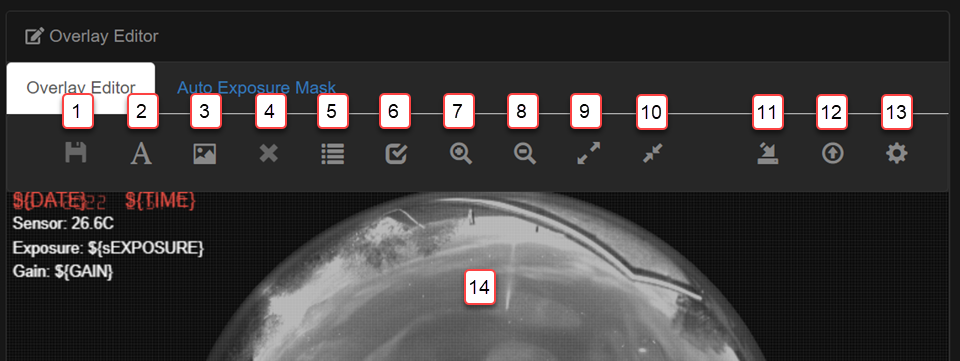
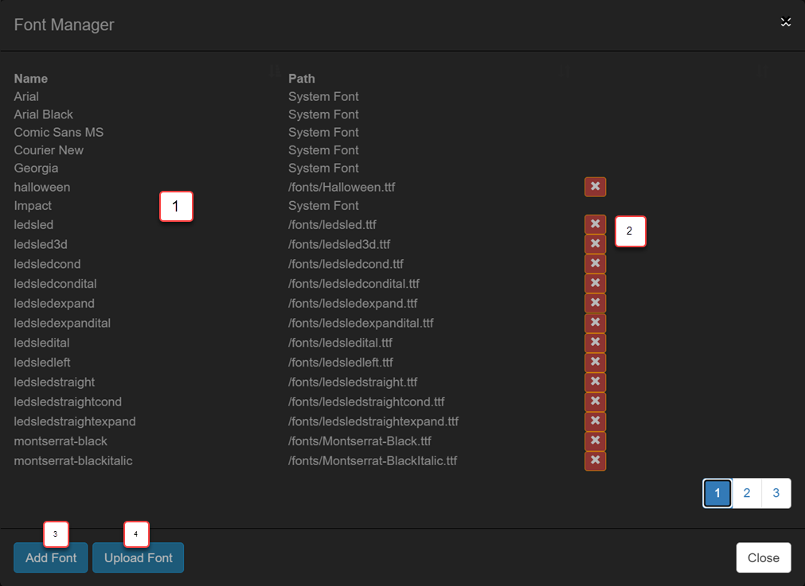
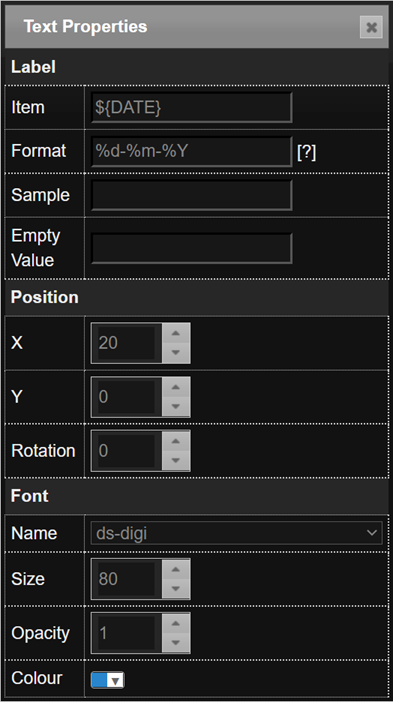
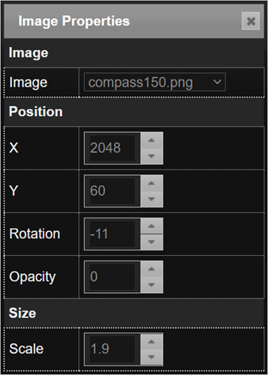
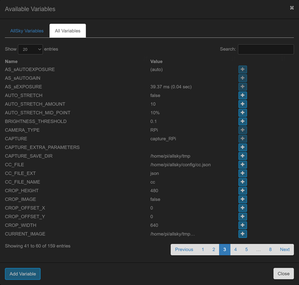
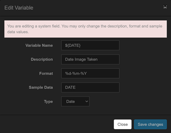
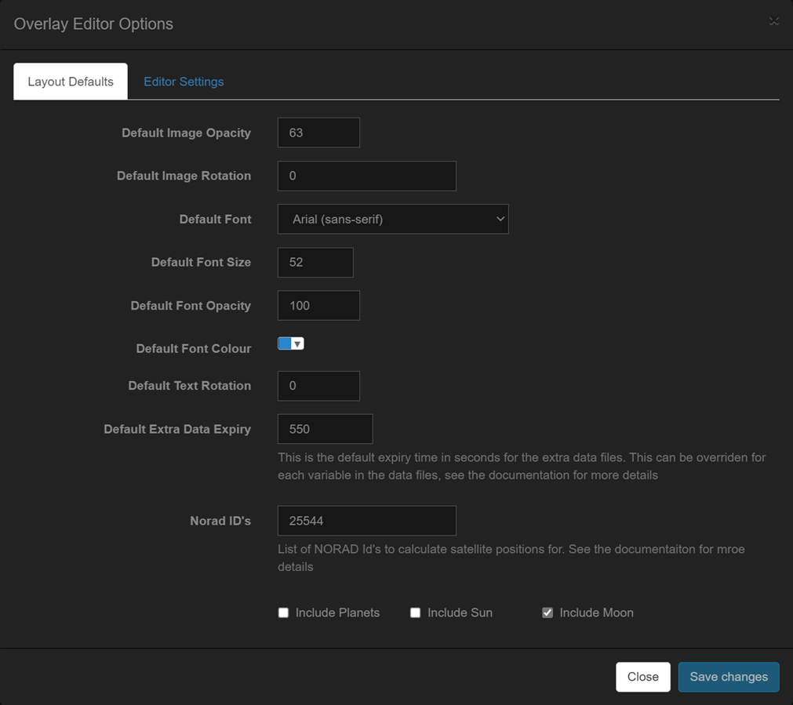
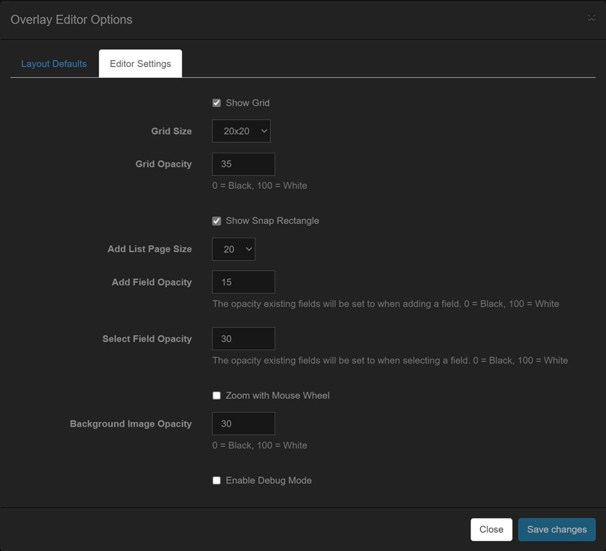
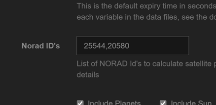

What are overlays?
AllSky has always had the ability to add text to the captured image but in a very limited way, either by the core settings or extra data. The 'Overlay Manager' allows for almost any piece of information to be added to the captured AllSky image. Some of the key features include
- Overlay Manager - The main application for managing overlays
- Drag and Drop interface - Fields can be dragged around the screen to position them
- Customisable Interface - The user interface can be highly customised to your requirements
- Font Manager - You can upload any truetype font and use it in the overlays
- Variable Manager - Provides a library of fields that you can add to the image. You can add your own fields to the variable manager
- Image manager - Allows you to upload and manage any images you wish to add to the image
- Text Fields - This allows text to be added to the image, key features
include
- Ability to add any data from AllSky to the image
- Ability to add custom (extra) data to the image
- Any truetype font can be used
- Text can be any colour
- Text can be rotated
- Image Fields - This allows images to be added to the image
- Any image can be uploaded
- Images can be scaled and rotated
How Overlays work
First the Overlay system has to be enabled. This is via the 'Image Overlay' options in the AllSky Settings. When the 'External Overlay' option is enabled ALL of the other 'Image Overlay' options are ignored and the 'Overlay Module' used instead. In future versions of AllSky the 'Image Overlay' options will be removed from the AllSky settings and the Overlay Module used by default
After Allsky has captured an image then
- All system variables are replaced with the appropriate values for the image, i.e. exposure
- Any extra data variables are replaced with the appropriate content from the extra data files
- Any images are added
AllSky Fields
The heart of the Overlay Manager is fields. There are two types of fields: text and image. Text fields consist of text and/or variables, image fields display images. For text fields the variables, enclosed within ${} are replaced with the relevant data.
Some example fields and variables
| Field | Example Output | Description |
${DATE} |
24/10/22 | Displays the date from the DATE variable. The date can be formatted in a variety of ways, see the section on formatting fields for details |
Date: ${DATE} |
Date: 24/10/22 | Displays the date from the DATE variable. The date can be formatted in a variety of ways, see the section on formatting fields for details |
Date: ${DATE} ${TIME} |
Date: 24/10/22 23:12:34 | Displays the date from the DATE variable and the time from the TIME variable. |
Exposure |
Exposure | Simply displays the text |
Variables can come from a variety of sources
- AllSky - The main AllSky application generates its own variables
- Modules - Any module can create variables
- Extra Data - Typically some application external to AllSky will create these variables
AllSky Variables
This table summarises all of the Core AllSky variables available. All of these variables can be accessed from the Variable Manager
The table below shows the most commonly used variables, a complete list of all variables available can be found within the field manager
| Variable | Example Data | Description |
${DATE} |
20221024 | The date the current image was taken |
${TIME} |
221623 | The time the current image was taken |
${GAIN} |
4.692540 | The gain used for the current image |
${AUTOGAIN} |
1 | 1 If Autogain is enabled, 0 if Autogain is disabled |
${sAUTOGAIN} |
(auto) | A string containing either '(auto)' or blank |
${EXPOSURE_US} |
90000000 | The exposure of the current image in micro seconds |
${sEXPOSURE} |
90.0 sec | The exposure of the current image in micro seconds expressed in a human readable format |
${sAUTOEXPOSURE} |
(auto) | A string containing either '(auto)' or blank |
${AUTOEXPOSURE} |
1 | 1 If Autoexposure is enabled, 0 if Autoexposure is disabled |
${TEMPERATURE} |
36 | The temperature of the camera sensor. NOTE: Currently this is only valid for ZWO cameras |
${MEAN} |
0.108564 | The mean value for the current image |
${BRIGHTNESS} |
0 | The brightness |
Module Variables
Any module can create variables for use in the Overlay Manager
For this reason it is important that the Overlay module runs as late as possible within the flow.
As an example the Star Count module creates a variabled ${STARCOUNT}
Please refer to the documentation on each module for any variables that it may make available.
Extra Data Variables
AllSky has the ability to add additional information to the captured image but in a limited way. The Overlay Manager now provides a much more sophisticated method for making this data available
This is an advanced topic and as such you will need to have an understanding of the Linux file system and howto manage files within it
all extra data now resides in the AllSky tmp directory
~/allsky/tmp. A new folder is required in the tmp directory called extra.
This 'extra' folder contains files that the Overlay Manager will attempt to process
and create as variables.
Let’s assume you want to add weather data to your images. You first need to create
or obtain a program that gathers that data and writes it to a file. How you obtain
that file is outside the scope of this documentation, but the program needs to write
the data in a specific format in a file in the ~/allsky/tmp/extra
directory named
xxxxx. Two different formats are supported for the extra data, a simple text file
and a json file. The json structure provides a lot more flexibility
The extra directory is not created by the main AllSky software. It is upto each external program to check if it exists and if not create it.
Text Files
Text files must end with a .txt extension. The format is a simple name/value structure, an example is outlined below
| File | AllSky Result | ||||||||||
|
AGTEMP=14.0C
AGHUMIDITY=90.1% AGHEATERCURRENT=215 AGSTAT=Night |
|
Since the data in these files could become 'old' i.e. the application creating them fails or is simply not running. To allow AllSky to detect this you can tell AllSky to ignore the files in the 'extra' directory when they are over a certain age. For txt files this value is specified in the Overlay Manager settings dialog
JSON Files
JSON files are more complex in their structure but provide a lot more flexibility for you to add your own variables and even control the attributes of a field
| This json will produce exactly the same variables as the txt file described above. The data will expire as defined in the Overlay Manager Settings dialog | This json includes expiry times for some of the elements. In this case the expiry time for the relevant elements will be used and the Overlay Manager Dialog expiry setting for the remaining variables | This json, which has been truncated for brevity includes all of the attributes that a field can set. It also adds an image |
|
{
"AGTEMP": {
"value": "14.0C"
},
"AGHUMIDITY": {
"value": "90.1%",
},
"AGHEATERCURRENT": {
"value": "215",
},
"AGSTAT": {
"value": "Night",
},
}
|
{
"AGTEMP": {
"value": "14.0C",
"expires": 600
},
"AGHUMIDITY": {
"value": "90.1%",
"expires": 600
},
"AGHEATERCURRENT": {
"value": "215",
},
"AGSTAT": {
"value": "Night",
},
}
|
{
"AGTEMP": {
"value": "14.0C",
"x": 800,
"y": 200,
"fill": "#333333",
"font": "ledsled",
"fontsize": 40,
"opacity": 0.2,
},
"AGHUMIDITY": {
"value": "90.1%",
},
"AGCLOUD": {
"value": "11%",
},
"AGSCOPE": {
"image": "crosshair.png",
"x": 300,
"y": 400,
"scale": 0.1,
"expires": 6000,
"opacity": 0.5
}
}
This demonstrates some important points |
The txt/json files must be created by some application outside of Allsky and there are a few things that must be considered when creating the files
- Variable Name - Since you could end up conflicting with AllSky system variables its best to prefix your own variables. The prefix will help prevent any clashes. In the examples above the variables are prefixed with AG
- Permissions - You must ensure that the files created in the 'extra' directory can be read by AllSky. It is upto the application creating them to ensure the permissions are correct. The Overlay Manager will ignore any files it cannot access
The Main User Interface
The Overlay Manager consists of two key areas. The toolbar and working area. The working area contains the latest image captured in the background, there are various settings to control how visible this image is. A grid is also overlayed on the working area to allow easier placement of fields, again there are various settings to control how the grid is displayed

| Annotation | Icon | Description |
|---|---|---|
|
1 - Save |
This will be enabled when any changes have been made that require saving. This button will only be enabled when leaving certain fields. For example if you change a field label you must click out of the field before the save button will be enabled |
|
|
2 - Add Custom Field |
This allows you to add any field or label. When using this option to add a field you must manually eneter the correct field label |
|
|
3 - Add Image Field |
This allows you to add an image to the overlay. The image must have previously been uploaded using the image manager |
|
|
4 - Delete the currently selected field |
This button will be enabled when any field is selected and allows the field to be deleted. The del key can also be used |
|
|
5 - Add field from the variable manager |
This button will allow you to add a pre defined field from the field manager |
|
|
6 - Test fields |
This button will display sample data in each of the fields. This is useful to see what actual data will look like on the overlay so you can better align fields |
|
|
7 - Zoom In |
This button will allow you to zoom in |
|
|
8 - Zoom Out |
This button will allow you to zoom out |
|
|
9 - Full Size |
This button will zoom to the full size of the image |
|
|
10 - Fit To Screen |
This button will zoom to fit the image on the screen |
|
|
11 - Display Font Manager |
Displays the Font Manager, see the later section for more details |
|
|
12 - Display Image Manager |
Displays the Image Manager, see the later section for more details |
|
|
13 - Display Settings |
Displays the Overlay Manager settings dialog |
|
|
14 - Working Area |
The main working area. The image here is the last one captured by AllSky Its best to create overlays when the AllSky software is running since you will have access to the latest image. Whilst there is nothing stopping you creating overlays whilst Allsky is not capturing bear in mind that you may not be using all of the available screen area since the images used when allsky is stopped/starting up may be smaller than those captured by your camer |
Using The Overlay Manager
The following section details the basic operation of the Overlay Manager and how to manage fields and variables
The Font Manager
The Font Manager support all mainstream browser fonts, called system fonts and also allows you to upload your own fonts for use on Overlays. Any truetype font is supported
|  |
|
To use a font it must be installed in the Overlay Manager and there are two ways to install fonts
Install from daFont.com
Navigate to the font page on daFont.com that you wish to install, for example https://www.dafont.com/led-sled.font Click the 'Add Font' button and enter the font url, its best to copy it from the browser. The Font Manager will install the font and refresh the available font list.
Installation via a zip file
First ensure that the fonts you wish to installed are contained within a zip file. You can create the zip file yourself or download from placed like https://fonts.google.com/
Select the Upload Font button and browse to the zip file. The Font Manager will extract the files from the zip file and install any fonts it finds
When installing fonts if any issues arise the Font Manager will display a notice indicating why the font(s) could not be installed
The Image Manager
The Image Manager allows you to upload images for use on Overlays

|
|
Adding Fields to the Overlay
There are three ways to add fields to the overlay, two for text fields and one for images
- Manually add a text field
Select the 'Text' icon from the toolbar and the 'Text Field Properties Editor' will be displayed. Enter a some text for the field, this can include variable names if required. The field will initially be positioned in the top left and. You can drag the field to wherever you require it and set the fields properties as required. The properties editor is described in detail later in this document
- Adding fields via the 'Variable Manager'
Select the 'Variable Manager' from the toolbar and navigate to the field you require. Click the plus symbol to add the field to the overlay. Initially the field will be positioned at the top left but can be dragged to wherever you require it and the properties changed
- Adding an Image field
Select the image icon from the toolbar and the image properties editor will be displayed. Select the image you require from the drop down and then move it and resize it as required. The image must have been uploaded via the 'Image manager' which is covered later
The Property Editors
The property editors allow setting of the various elements of text and image fields
Text Property Editor
|  |
When using the 'Extra Data' files in json format all of the attribute can be overridden in the json file allowing for external control of how fields appear |
Image Property Editor
|  |
|
Variable Manager
The Variable Manager provides a mechanism for storing variables and text to create fields. AllSky ships with a default set of variables but this can be amended as required
The Variable manager provides a quick method for storing details of the available variables and adding them to the overlay. The manager comes preinstalled with a set of system variables. These system variables can be modified but not deleted
You can also add your own variables to the manager, typically these will come from modules or extra data
The Variable Manager consists of two tabs. The first, 'AllSky Variables' is the library of available variables and the second 'All Variables' is a lits of all variablesm see later
AllSky variables

|
The 'AllSky Variables' tab shows all variables available to use on overlays. Three icons are available for each variable
The 'Add Variable' button will allow you to add your own variables. Selecting this button will display the 'Add Variable' window. The search option can be used to quickly search for a variable you require. The search is not case sensitive |
|  |
Sometimes it can be hard to find variables from newly added modules, or extra data. This tab lists every variable that AllSky can see and the last value it had. This list provides a faster way to add variables.
If the add button is disabled then it means that the variable is alread in the 'AllSky Variables' list IMPORTANT: This list is only populated if the debug mode is enabled for the overlay module in the module manager |
The Add/Edit Variable Dialog
|  |
|
Formatting Variables
Date, Time and Numeric fields can be formatted to alter their appearance. Each variable type has a different set of codes for formatting. The codes are loosely based on Python
Formatting Numbers
| Directive | Meaning | Output Format |
|---|---|---|
| %0f | Formats a number to 0 decimal places | 2 |
| %2f | Formats a number to 2 decimal places | 2.00 |
Date and Time formats
| Directive | Meaning | Output Format |
|---|---|---|
| %a | Abbreviated weekday name. | Sun, Mon, … |
| %A | Full weekday name. | Sunday, Monday, … |
| %w | Weekday as a decimal number. | 0, 1, …, 6 |
| %d | Day of the month as a zero added decimal. | 01, 02, …, 31 |
| %-d | Day of the month as a decimal number. | 1, 2, …, 31 |
| %b | Abbreviated month name. | Jan, Feb, …, Dec |
| %B | Full month name. | January, February, … |
| %m | Month as a zero added decimal number. | 01, 02, …, 12 |
| %-m | Month as a decimal number. | 1, 2, …, 12 |
| %y | Year without century as a zero added decimal number. | 00, 01, …, 99 |
| %-y | Year without century as a decimal number. | 0, 1, …, 99 |
| %Y | Year with century as a decimal number. | 2013, 2019 etc. |
| %H | Hour (24-hour clock) as a zero added decimal number. | 00, 01, …, 23 |
| %-H | Hour (24-hour clock) as a decimal number. | 0, 1, …, 23 |
| %I | Hour (12-hour clock) as a zero added decimal number. | 01, 02, …, 12 |
| %-I | Hour (12-hour clock) as a decimal number. | 1, 2, … 12 |
| %p | Locale’s AM or PM. | AM, PM |
| %M | Minute as a zero added decimal number. | 00, 01, …, 59 |
| %-M | Minute as a decimal number. | 0, 1, …, 59 |
| %S | Second as a zero added decimal number. | 00, 01, …, 59 |
| %-S | Second as a decimal number. | 0, 1, …, 59 |
| %f | Microsecond as a decimal number, zero added on the left. Please note that AllSky's times are only to the nearest second | 000000 – 999999 |
| %z | UTC offset in the form +HHMM or -HHMM. | +0100 |
| %Z | Time zone name. | Europe/London |
| %j | Day of the year as a zero added decimal number. | 001, 002, …, 366 |
| %-j | Day of the year as a decimal number. | 1, 2, …, 366 |
| %U | Week number of the year (Sunday as the first day of the week). All days in a new year preceding the first Sunday are considered to be in week 0. | 00, 01, …, 53 |
| %W | Week number of the year (Monday as the first day of the week). All days in a new year preceding the first Monday are considered to be in week 0. | 00, 01, …, 53 |
Overlay Manager Settings
The Overlay Manager has a settings dialog that can be used to manage settings for both the current overlay and the Overlay Manager itself
Layout Defaults
The 'Layout Defaults' are settings that apply to the current layout
|  |
|
The Satellite and Planet options can be CPU intensive and are disabled by default. When enabling these please use the module managers debug option to ensure they are not causing an issue with the capture process. Details of how to use the module manager debug option are covered in the Module Manager section
Overlay Editor Defaults
The 'Overlay Editor Defaults' are default settings that apply to the overlay editor
|  |
|
Satellites / Sun / Moon / Planets
The Overlay Manager is capable of generating data for celestial bodies. Normally these are disabled unless the relevant options are selected in the Overlay Manager Settings. All calculations are based upon the lat/lon entered in the AllSky camera settings
The Sun
For the Sun various timings are generated for sunrise/set etc. The following variables are available, they are available in the Variable Manager
| Variable | Description |
| ${ASTRONOMICALTWILIGHTSTARTS} | Start of Astronomical twilight |
| ${CIVILTWILIGHTSTARTS} | Start of Civilian twilight |
| ${CIVILTWILIGHTENDS} | End of Civilian twilight |
| ${NAUTICALTWILIGHTENDS} | End of Nautical twilight |
| ${ASTRONOMICALTWILIGHTENDS} | End of Astronomical twilight |
The Moon
The following variables are available for the Moon
| Variable | Example Value | Description |
| ${MOON_AZIMUTH} | 262° | Azimuth of the Moon |
| ${MOON_ELEVATION} | -24.65° | Elevation of the Moon |
| ${MOON_ILLUMINATION} | 7.3 | Illumination of the Moon in % |
| ${MOON_SYMBOL} | Using this variable and the Moon Font will display the current phase of the Moon |
The Planets
The following variables are available for the Planets if enabled in the Overlay Manager settings
| Variable | Example Value | Description |
| ${MERCURYALT} | -27deg 06' 55.2" | The Altitude of Mercury in Degrees |
| ${MERCURYAZ} | 292deg 07' 41.6" | The Azimuth of Mercury |
| ${MERCURYVISIBLE} | No | Yes/No to indicate if Mercury is visible. This does NOT mean its visible to the naked eye just that its above the horizon |
| ${VENUSALT} | -25deg 03' 52.8" | The Altitude of Venus in Degrees |
| ${VENUSAZ} | 282deg 23' 21.9" | The Azimuth of Venus |
| ${VENUSVISIBLE} | No | Yes/No to indicate if Venus is visible. This does NOT mean its visible to the naked eye just that its above the horizon |
| ${MARSALT} | 03deg 56' 06.7" | The Altitude of Mars in Degrees |
| ${MARSAZ} | 55deg 12' 53.7" | The Azimuth of Mars |
| ${MARSVISIBLE} | Yes | Yes/No to indicate if Mars is visible. This does NOT mean its visible to the naked eye just that its above the horizon |
| ${JUPITERALT} | 29deg 49' 30.9" | The Altitude of Jupiter in Degrees |
| ${JUPITERAZ} | 142deg 19' 20.8" | The Azimuth of Jupiter |
| ${JUPITERVISIBLE} | Yes | Yes/No to indicate if Jupiter is visible. This does NOT mean its visible to the naked eye just that its above the horizon |
| ${SATURNALT} | 20deg 50' 21.6" | The Altitude of Saturn in Degrees |
| ${SATURNAZ} | 187deg 21' 15.3" | The Azimuth of Saturn |
| ${SATURNVISIBLE} | Yes | Yes/No to indicate if Saturn is visible. This does NOT mean its visible to the naked eye just that its above the horizon |
| ${URANUSALT} | 21deg 21' 51.3" | The Altitude of Uranus in Degrees |
| ${URANUSAZ} | 90deg 10' 23.5" | The Azimuth of Uranus |
| ${URANUSVISIBLE} | Yes | Yes/No to indicate if Uranus is visible. This does NOT mean its visible to the naked eye just that its above the horizon |
| ${NEPTUNEALT} | 29deg 43' 44.2" | The Altitude of Neptune in Degrees |
| ${NEPTUNEAZ} | 150deg 24' 55.8" | The Azimuth of Neptune |
| ${NEPTUNEVISIBLE} | Yes | Yes/No to indicate if Neptune is visible. This does NOT mean its visible to the naked eye just that its above the horizon |
| ${PLUTOALT} | 10deg 07' 14.9" | The Altitude of Pluto in Degrees |
| ${PLUTOAZ} | 207deg 49' 18.1" | The Azimuth of Pluto |
| ${PLUTOVISIBLE} | Yes | Yes/No to indicate if Pluto is visible. This does NOT mean its visible to the naked eye just that its above the horizon |
Satellites
The Overlay Manager can generate position elements for satellites. To enable this enter a comma separated list of NORAD ID's in the Overlay Manager Settings.
To find NORAD Id's brose to the Celestrak website and search for the required object. Then enter the id's as a comma separated list in the Overlay Manager Settings
|  |
In this example we have entered two Norad ID's
|
This will generate the following variables that can be used on Overlays
| Variable | Example Value | Description |
| ${25544ALT} | -32deg 41' 34.3" | The Altitude of the ISS in Degrees |
| ${25544AZ} | 58deg 46' 59.3" | The Azimuth of the ISS in Degrees |
| ${25544VISIBLE} | No | Yes/No to indicate if the ISS is visible. This does NOT mean its visible to the naked eye just that its above the horizon |
| ${20580ALT} | -32deg 41' 34.3" | The Altitude of the Hubble in Degrees |
| ${20580AZ} | 58deg 46' 59.3" | The Azimuth of the Hubble in Degrees |
| ${20580VISIBLE} | No | Yes/No to indicate if the Hubble is visible. This does NOT mean its visible to the naked eye just that its above the horizon |